施工前
施工前
戸建住宅|外壁の塗り替え
外壁の色を変えて、お住まいの印象を一新しました。
写真をタップするか、下の「施工前」「施工後」のボタンで切り替えられます。スマホでもご覧いただけます。
施工前
外壁の色を変えて、お住まいの印象を一新しました。

 施工前
施工前
色あせて汚れた屋根を、遮熱塗料で塗り替えました。夏の屋根の熱をおさえます。
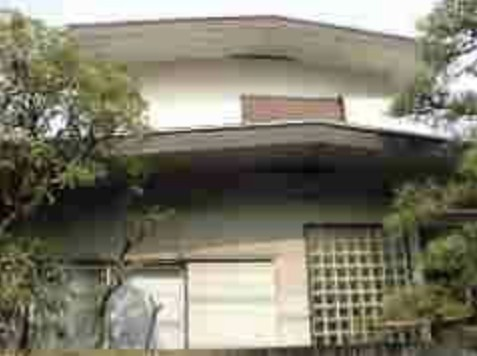
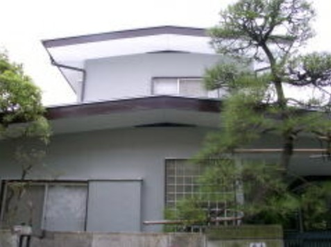
施工前汚れと傷みが目立っていた外壁を、明るくきれいに仕上げました。
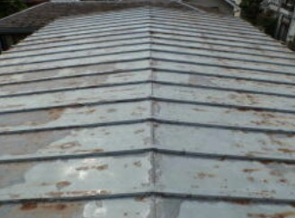
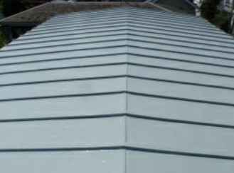
施工前サビが出ていたトタン屋根を、サビを落としてから遮熱塗料で塗り替えました。
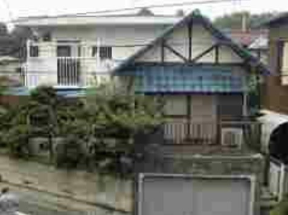
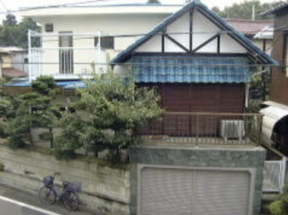
施工前外壁と破風(屋根の三角部分)を塗り替えて、すっきりした印象に。
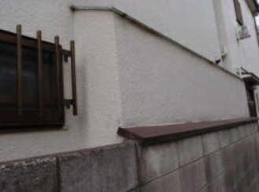
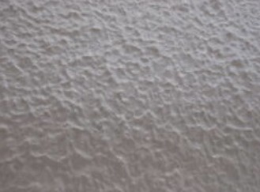
施工前外壁を遮熱・断熱用の仕上げ材で仕上げました。室内が外気温の影響を受けにくくなります。
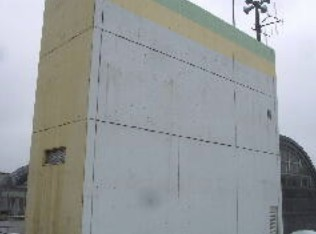
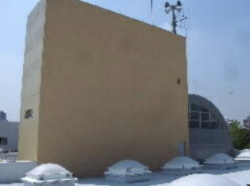
施工前階段室内部の結露を防ぐため、断熱材を外側に貼り付けて専用の仕上げ材で仕上げました。
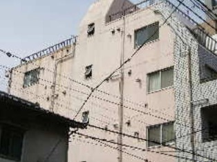
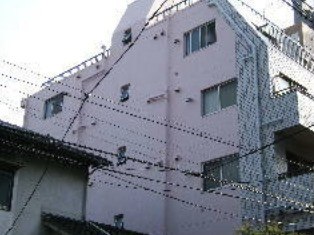
施工前足場が掛けられない外壁を、ロープで吊り下がるブランコ工法で塗装しました。
今のホームページの施工例から一部を掲載しています。本番では、施工例のお写真をすべて移して、建物別・部位別に絞り込めるようにします。
工事を終えたお客様から、うれしいお声をいただいています。

杉並区久我山 N様邸
長い間悩んでいた外壁タイル面からの雨漏りも止まり、丁寧にタイルの雰囲気も損なわず仕上げていただきありがとうございました。足場が、はずれた時に、思わずバンザーイをしてしまったくらい嬉しくなりました。

小金井市 I様邸
今まで何度か塗装工事をしましたが、なかなか納得のいく結果は得られませんでした。今回はたまたま近所で矢口塗装店の工事現場を見かけ、その仕事振りから直感でここにお願いしようと決めました。実際、徹底した仕事への取組み、高い技術力がうかがわれ、今の時代こんな職人魂を持った集団が存在することに感動し、私の直感が正しかったことがしっかり証明されました。ご近所の方に家が若返りましたね。と言われました。

西東京市 Y様邸
すご〜く綺麗になりました。自分の仕事上(内装工事)、塗装屋さんを数社知っており、仕上がりをいくつも見ていますが、配管パイプなどの細かい所まで丁寧で綺麗な仕上がりに驚きました。弊社社員の皆が見に来ました。ありがとうございます。今後もよろしくお願いします。

杉並区久我山 La Rosa オーナー様
工事をお願いしましてから着工まで、だいぶ待ちました。でもさすがが「行列のできるペンキ屋さん!」です。来ていただいた職人さんが非常に丁寧で、きれいに仕上がり ありがとうございました。待ったかいが有りました。また、工事中に旅行に出かけましたが、安心してお任せ出来ました。
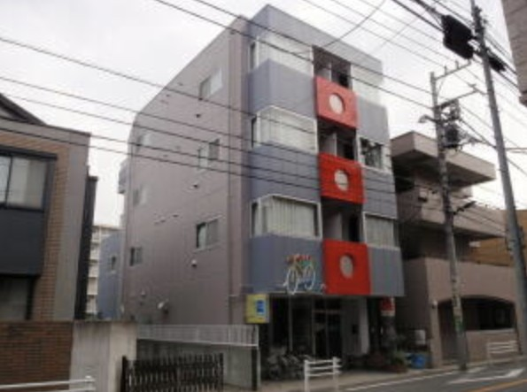
杉並区久我山 クラウディア久我山 オーナー様
店舗を兼ねた貸しビルで、都道に面しておりますので目立ち且つ周りの環境に合う色・色分けをお任せし幾つかの案を提出して頂きました。イメージ以上の仕上がりに嬉しく思っております。工事中に、塗装以外で悪い箇所が見つかり直して頂いたりもしました。入居者の皆様やご近隣の方には長い間ご不便をお掛けしましたが、お声掛け等ご配慮頂きありがたかったです。
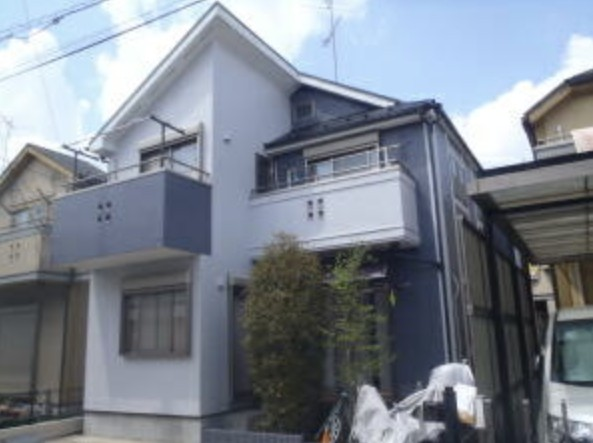
清瀬市 山本様邸
今回の御社の作業は、丁寧で早く、後片付けもきっちりされていて、近所の方からも、お褒めのお言葉をいただきました。今回、御社へ作業依頼をして、大変良かったと感じました。色、色分け、仕上がりに満足しています。
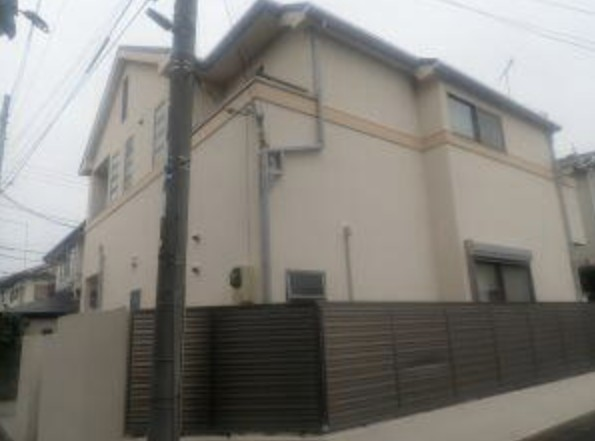
杉並区 I様邸
この度は、大変お世話になりまして、誠にありがとうございました。寒い中、朝早くから、丁寧な作業で新築のようにきれいにしていただき、心より感謝申し上げます。
一級建築士・施工管理技士がお住まいを拝見して、ご予算に合わせた方法をご提案します。